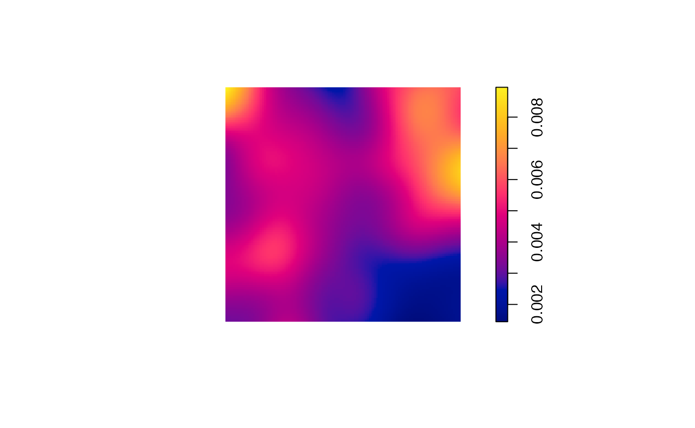
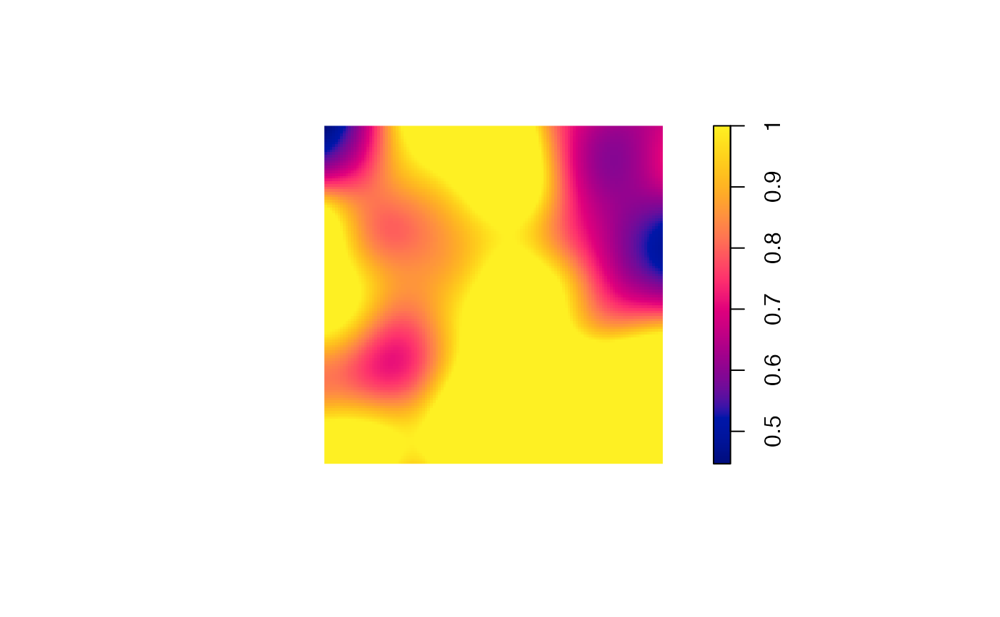

The package proposes several functions to simulate random communities.
Simulating abundances according to classical models
The classical models of ecology are implemented in
divent in the rcommunity() function.
Arguments are :
-
n: the number of communities to draw. -
size: the number of individuals to draw in each community. -
species_number: the number of species. -
distribution: the distribution of species abundances.
Distributions may be “lnorm” (log-normal), “lseries” (log-series), “geom” (geometric) or “bstick” (broken stick):
- log-normal (“lnorm”) distributions (Preston
1948) require argument
sd_lnormto set the standard deviation of the log-abundances. The expectation of the distribution is computed from the other arguments. - log-series (“lseries”) distributions (Fisher,
Corbet, and Williams 1943) rely on the
fisher_alphaargument. They ignorespecies_numberbecause the number of species is given byfisher_alphaandsize. - geometric (“geom”) distributions (Motomura
1932) have argument
prob_geom. This distribution is not stochastic. - MacArthur’s broken stick (“bstick,” MacArthur 1957) has no argument.
The probability distribution is first drawn, once. Abundances are
then drawn in n multinomial distributions, with respect to
the probabilities and size.
Example: a single log-normal community with 300 species and standard deviation equal to 2 is drawn and plotted:
Bootstrapping an observed abundance distribution
Bootstrapping allows drawing many community according to the same
probability distribution according to a multinomial law with respect to
the probabilities and size. This is useful to compute
confidence intervals of any statistics of the distribution.
Arguments are :
-
n: the number of communities to draw. -
size: the number of individuals to draw in each community. -
proborabd: a numeric vector containing probabilities or abundances. One of them must be given, the other one must beNULL. -
bootstrap: defines the technique used:- “Marcon2012”: following Marcon et al.
(2012), abundances are just normalized to obtain probabilities.
If
probis given rather thanabd, these probabilities are used. - “Chao2013” or “Chao2015” (by default): based on the observed
abundances (
abdmust be given), the actual probability distribution is estimated following Chao, Wang, and Jost (2013) or Chao and Jost (2015). Observed frequencies (normalized abundances) are not directly used as estimators of the probabilities: abundant species are correctly estimated but rare species are either overestimated or unobserved. A model based on sample coverage is used to correct this issue. The estimator of sample coverage is chosen by the argumentcoverage_estimator: the sum of observed probabilities equals the sample coverage. The number of unobserved species is estimated and their distribution (their probabilities sum to the coverage deficit) is arbitrary set as uniform (“Chao2013”) or geometric (“Chao2015”).
- “Marcon2012”: following Marcon et al.
(2012), abundances are just normalized to obtain probabilities.
If
Example: a community based on the subplot 1 of Paracou plot 6 is drawn and its distribution is compared to the observed frequencies.
library("ggplot2") # for `labs()`
# Draw a large community to avoid sample bias
rcommunity(1, size = 1E6, abd = as.numeric(paracou_6_abd[1, ])) %>%
# Compute the probabilities
as_probabilities() %>%
# Rename the distribution
mutate(site = "bootstrap") %>%
# Compare to the original distribution
bind_rows(as_probabilities(paracou_6_abd[1, ])) %>%
autoplot() +
labs(color = "Distribution")
The probabilities of abundant species are not modified. The probabilities of rare species is smaller than their frequencies and more than a hundred species are added.
Simulating spatialized communities
Communities
Spatialized communities include the location of individuals in a
window. The abundance distribution is drawn according to the same
arguments as in rcommunity().
Additional arguments allow choosing:
- the window:
winmust be anowinobject from the spatstat.geom package. Default is a square window whose side length is 1. - the species names:
species_namesis a character vector with the species names. They may be generated automatically. - the spatial distribution of the points in argument
spatial, i.e. the point process used to draw their location:- “Binomial” draws points uniformly in the window.
- “Thomas” draws aggregated points:
thomas_muis the average number of points per cluster andthomas_scalethe standard deviation of random displacement (along each coordinate axis) of a point from its cluster center.
- the
weight_distributionof the points sets their sizes:- “Uniform”: a uniform distribution between
w_minandw_max. This is the default distribution, withw_min = w_max = 1. - “Weibull”: parameters are
w_min(minimum size),weibull_scale(the scale parameter) and shape (the shape parameter). - “Exponential”: argument
w_meanis the mean weight, i.e. the negative of the inverse of the decay rate.
- “Uniform”: a uniform distribution between
Example: a random community is drawn and mapped. It contains 100 trees of 5 species. Their spatial distribution is aggregated and their size distribution is exponential (with default parameters).
rspcommunity(
1,
size = 100,
species_number = 5,
spatial = "Thomas",
weight_distribution = "Exponential"
) %>%
autoplot()Species
To simulate communities more accurately, species can be drawn one by one. This way, spatial structures and size distributions can be chosen for each species.
The following example shows how to do it: a 1-ha forest made of an
aggregated species of interest and undifferentiated other ones.
rspcommunity() is called with arguments n = 1
and species_number = 1. A list is of point patterns is
obtained and superimposed to make a single wmppp
object.
library("spatstat") # for `square()`
library("dbmss") # for `superimpose.wmppp()`
library("ggplot2") # for `labs()`
library("dplyr") # for `%>%`
library("divent")
# A 1-ha window
the_win <- square(100, unitname = c("meter", "meters"))
# Simulate species
the_species <- do.call(
superimpose,
list(
rspcommunity(
# A "grey" species, i.e. all individuals of species out of focus
n = 1, species_number = 1, species_names = "others", size = 500,
# Spatial features: binomial distribution
win = the_win, spatial = "Binomial",
# Size distribution
weight_distribution = "Exponential", w_min = 10, w_mean = 15),
rspcommunity(
# The species of interest
n = 1, species_number = 1, species_names = "aggregated", size = 50,
# Spatial features: aggregated distribution
win = the_win, spatial = "Thomas", thomas_scale = 10, thomas_mu = 20,
# Size distribution
weight_distribution = "Weibull", weibull_scale = 30, weibull_shape = 2,
w_min = 10
)
)
)
# Map the simulated community
autoplot(the_species) +
labs(color = "Species", size = "Diameter")
Post-simulation processing of such spatialized communities may be for instance thinning to reduced the local average basal area.
## [1] 41.90301
# Thinning: the target is at most 40m² locally
target <- mean(G_density) * 40 / sum(G)
thin_im <- G_density
thin_im$v <- pmin(pmax(target / G_density$v, 0), 1)
# Plot the thinning probability
plot(thin_im)